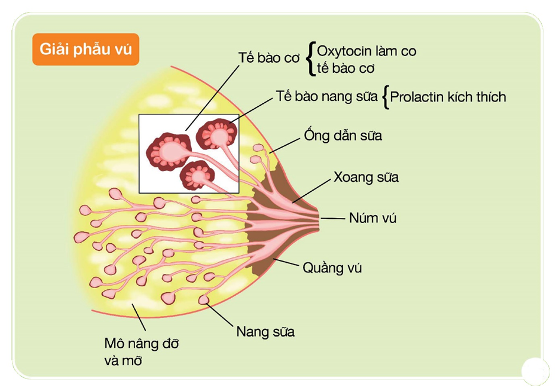
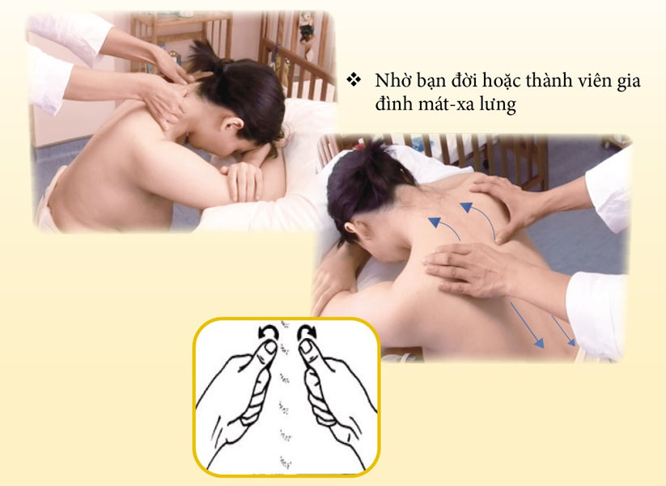

Bên trong bầu vú mẹ chứa các nang sữa, đó là những túi rất nhỏ được cấu tạo bởi các tế bào tiết sữa. Có hàng triệu nang sữa trong bầu vú của người mẹ.

Khi em bé bú, các tế bào tiết sữa sẽ lấy chất dinh dưỡng từ máu của mẹ để tạo thành sữa và tiết vào lòng các nang sữa. Xung quanh các nang sữa có các tế bào cơ nhỏ. Khi các tế bào cơ này co thắt, chúng sẽ ép sữa từ các nang sữa chảy vào các ống dẫn sữa và hướng về phía núm vú để chảy ra ngoài cho em bé.

Cơ chế này được điều khiển hoàn toàn tự nhiên và mạnh mẽ thông qua các hormone khi có sự kích thích trực tiếp từ việc bé bú mẹ hoặc khi mẹ vắt sữa đúng cách.
Quay lại Danh mục tài liệu